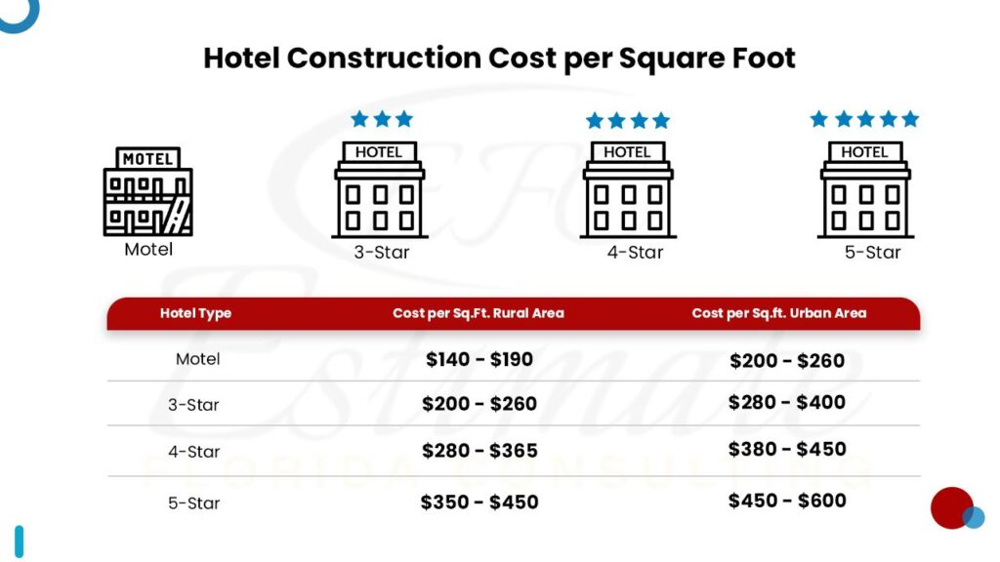
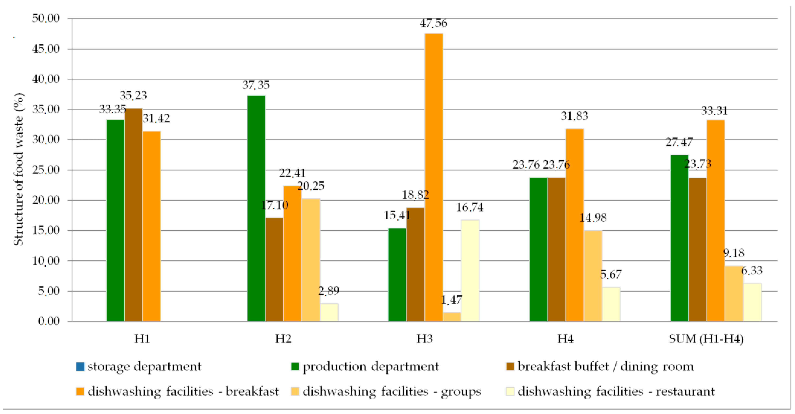
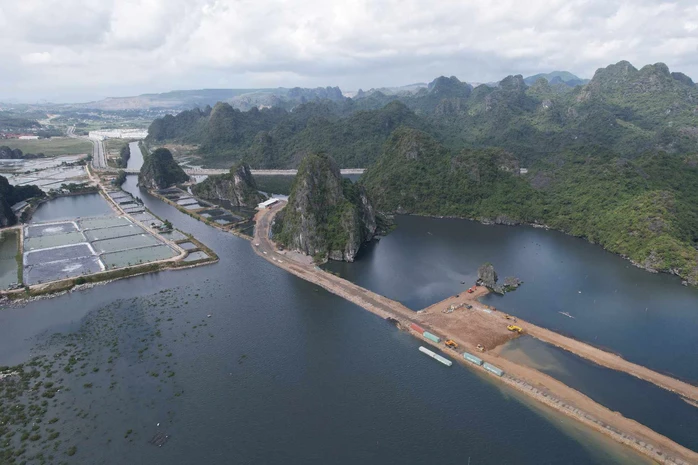
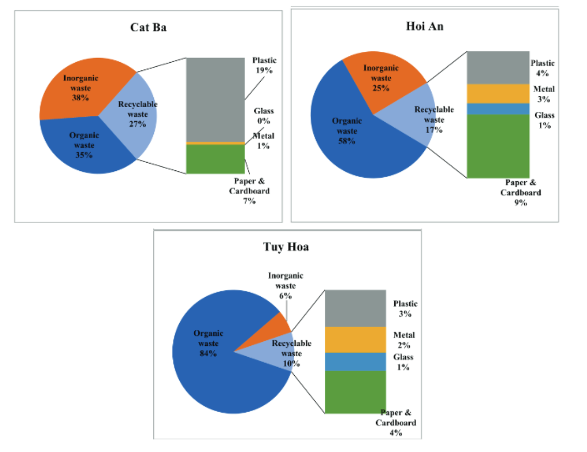
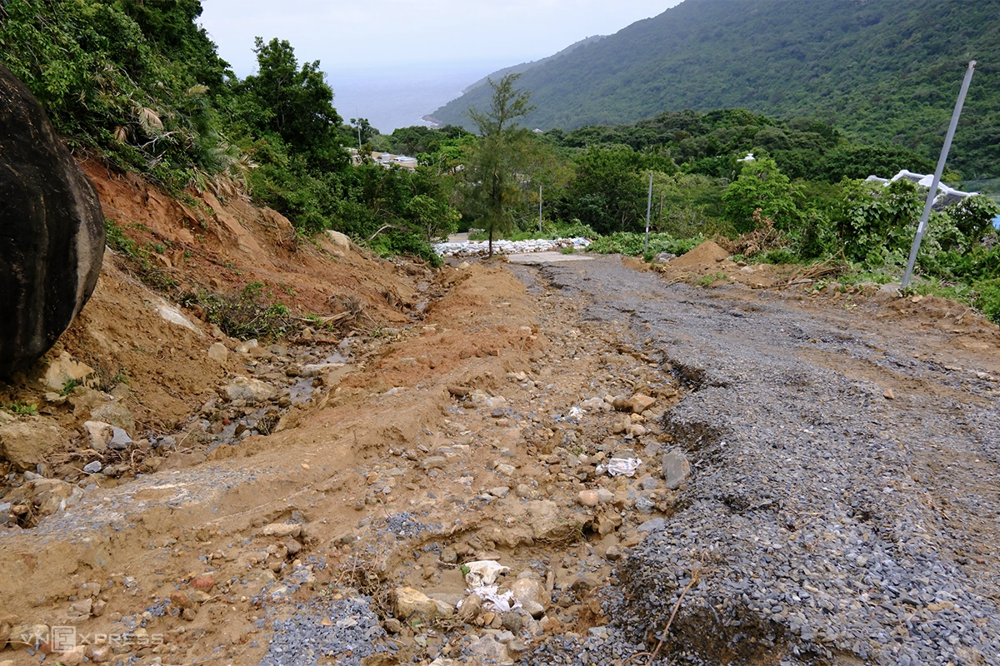
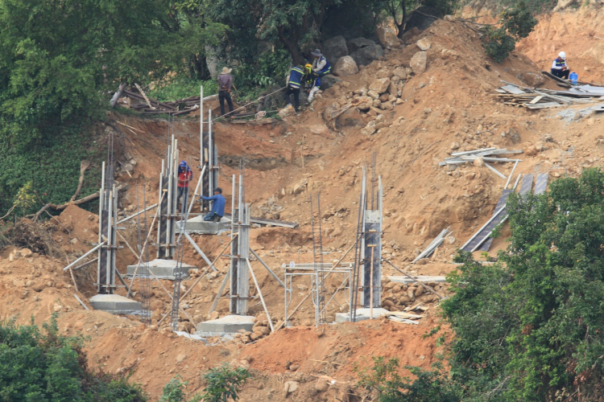
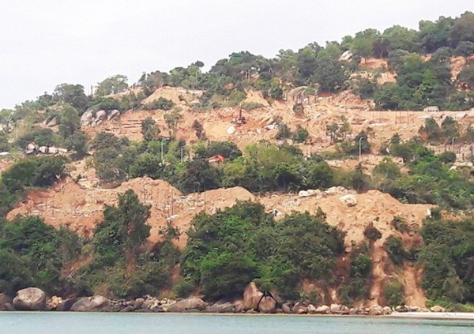
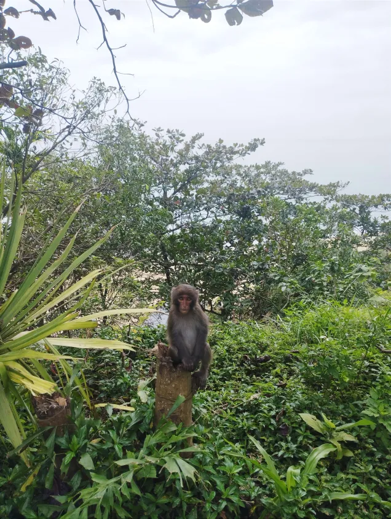
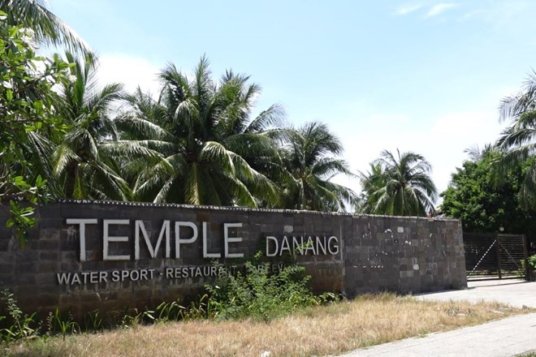

III. TÁC ĐỘNG TIÊU CỰC ĐỐI VỚI MÔI TRƯỜNG TỪ MÔ HÌNH KHÁCH SẠN VÀ KHU NGHỈ DƯỠNG
Mặc dù hoạt động du lịch có ý nghĩa vô cùng lớn cho thành phố Đà Nẵng, nhưng hệ quả của nó cũng không hề nhỏ.
Theo Bộ Văn hóa Thể thao và Du lịch, năm 2024, lượng khách du lịch của Đà Nẵng lên đến 11 triệu người, và có xu hướng gia tăng theo từng năm.
Nhằm đáp ứng những nhu cầu trên, những khách sạn, khu nghỉ dưỡng (resort) liên tục được khởi công và xây dựng. Liệu điều này có gây ra những ảnh hưởng đáng lo ngại về môi trường cho thành phố Đà Nẵng hay không?
Nếu Đà Nẵng tiếp tục phát triển khách sạn và resort ven biển mà thiếu quy hoạch, hậu quả lâu dài nào có khả năng xảy ra cao nhất?
1. Vấn Đề Chung
1.1. Tác Động Đối Với Môi Trường Từ Mô Hình Khách Sạn Và Khu Nghỉ Dưỡng Trong Quá Trình Xây Dựng
Tác Động 1
Rủi ro về môi trường và thiên tai: Các công trình nếu xây dựng quá sát biển hoặc ở vị trí nhạy cảm có nguy cơ cao bị ảnh hưởng bởi bão, lũ, sóng lớn, gây thiệt hại nặng nề về tài sản.
Tác Động 2
Sự phụ thuộc vào mùa vụ và biến động: Kinh doanh resort phụ thuộc nhiều vào tính thời vụ du lịch, các yếu tố khách quan như thời tiết bất lợi, dịch bệnh hoặc thay đổi chính sách đều có thể tác động tiêu cực.
1.2. Tác Động Đối Với Môi Trường Từ Mô Hình Khách Sạn Và Khu Nghỉ Dưỡng Trong Quá Trình Đi Vào Hoạt Động
Hoạt động xây dựng và vận hành khách sạn, resort có thể gây ra nhiều ảnh hưởng tiêu cực đến môi trường, đòi hỏi các biện pháp giảm thiểu và quản lý chặt chẽ.
Tiêu thụ tài nguyên và năng lượng: Các khu nghỉ dưỡng thường tiêu tốn nhiều nước cho hệ thống tưới tiêu cây xanh, bể bơi và nhu cầu sử dụng của khách. Bên cạnh đó, việc tiêu thụ điện năng lớn từ lưới điện quốc gia cũng góp phần làm gia tăng lượng khí thải nhà kính.
Ô nhiễm và chất thải:
- Nước thải: Lượng nước thải sinh hoạt lớn cần được xử lý hiệu quả trước khi xả ra môi trường để tránh gây ô nhiễm nguồn nước
- Rác thải rắn: Lượng rác thải từ hoạt động của resort và khách hàng thường rất lớn, gây áp lực lên hệ thống xử lý rác thải địa phương.
- Tác động đến hệ sinh thái: Việc xây dựng resort ở những vị trí đắc địa, gần thiên nhiên không nhiều thì ít cũng sẽ ảnh hưởng đến hệ sinh thái và môi trường bản địa.
2. Vấn Đề Thực Tế Từ Mô Hình Khách Sạn Và Khu Nghỉ Dưỡng
2.1. Cấp Độ Toàn Cầu
Tiêu thụ Tài nguyên Khổng lồ:
- Để xây dựng một căn khách sạn có thể sử dụng đến hàng nghìn tấn xi măng, sắt, thép.
- Sản xuất vật liệu xây dựng (xi măng, thép) là nguyên nhân gây ra khoảng 28% tổng lượng khí thải CO2 liên quan đến năng lượng toàn cầu. Đáng chú ý, riêng sản xuất xi măng đã chiếm khoảng 8% lượng CO2 phát thải toàn cầu.
- Ngoài ra, xây dựng một căn khách sạn cũng tiêu tốn một lượng vốn rất lớn. Dưới đây là bảng giá xây dựng một khách sạn dựa trên báo cáo của estimatorflorida.com.

estimatorflorida.com (đơn vị: số tiền/feet vuông)
Mất Đa dạng Sinh học:
- Các công trình resort thường xâm phạm các khu vực nhạy cảm (đảo, rừng nhiệt đới), gây phân mảnh môi trường sống và làm suy giảm nhanh chóng các loài động thực vật địa phương.
- Quá trình xây dựng tạo ra lượng lớn chất thải rắn xây dựng, gây áp lực lên hệ thống xử lý rác toàn cầu.
Theo thống kê của businesswaste.co.uk,
⮞ Các khách sạn trên toàn thế giới thải ra khoảng 289.700 tấn rác thải mỗi năm
⮞ Một khách sạn có 200 phòng sử dụng khoảng 300.000 sản phẩm nhựa (bao gồm bình nước, bàn chải đánh răng,..) dùng một lần mỗi tháng
⮞ Trung bình, một phòng khách sạn tiêu thụ từ 60.000 đến 120.000 lít nước mỗi năm
⮞ Tính theo cá nhân, mỗi khách lưu trú tạo ra khoảng 1 kg rác thải mỗi đêm - trong đó có một phần lẽ ra có thể tái chế được
⮞ Các khách sạn đóng góp khoảng 1% lượng khí thải CO₂ toàn cầu, với khoảng 363 triệu tấn khí CO₂ một năm, đủ để cung cấp năng lượng cho 45 triệu hộ gia đình trong một năm
⮞ Lượng thực phẩm bị lãng phí trong khách sạn chiếm gần 10% tổng lượng rác thải thực phẩm ở thương mại, siêu thị.
⮞ Nguyên nhân gây lãng phí thực phẩm trong khách sạn rất đa dạng, nhưng nghiên cứu chia thành 3 nhóm chính: 45% đến từ khâu chế biến thực phẩm, 34% đến từ thức ăn thừa trên đĩa của khách, 21% đến từ thực phẩm bị hư hỏng
⮞ Trung bình, một cơ sở kinh doanh dịch vụ lưu trú có thể chỉ với 50.000 bảng Anh (tương đương 1.8 tỷ đồng) mỗi năm để đưa rác thải thực phẩm ra bãi chôn lấp.
⮞ Các khách sạn chi khoảng 28 tỷ bảng Anh mỗi năm cho dịch vụ ăn uống và tổ chức sự kiện.
Cấu trúc rác thải thực phẩm trong tổng khối lượng thực phẩm không được sử dụng, bao gồm các giai đoạn của quy trình công nghệ (%)

(mdpi.com, 2020)
2.2. Cấp Độ Tại Việt Nam
Việt Nam chứng kiến sự bùng nổ của bất động sản nghỉ dưỡng, tập trung mạnh mẽ vào các dự án ven biển trong nhiều năm gần đây.
Làn sóng Phát triển Nóng (2015-2020):
- Tốc độ tăng trưởng dự án resort, khách sạn, và căn hộ du lịch (Condotel) ven biển rất cao tại các điểm nóng như Nha Trang, Phú Quốc, và Đà Nẵng.
- Các dự án có quy mô lớn, chiếm dụng toàn bộ đường bờ biển và hướng đến phân khúc cao cấp (4-5 sao).
Gánh nặng Phát thải:
- Phát thải CO2 từ vật liệu xây dựng (xi măng, thép) ở Việt Nam dự kiến tăng từ 63 triệu tấn (2015) lên 125 triệu tấn vào năm 2030.
Tác hại Rõ rệt đối với Địa chất:

Dự án lấn ra vịnh Hạ Long cả 1 km tính từ đường bao biển Hạ Long - Cẩm Phả (nld.com.vn)
- Nhiều dự án đã tiến hành lấn biển để mở rộng quỹ đất (tổng diện tích đất lấn biển tăng khoảng 5.683,7 ha trong giai đoạn 2010-2021), làm thay đổi cấu trúc đường bờ biển và gia tăng nguy cơ xâm thực bờ biển.
- Việc xây dựng hành lang resort dọc bờ biển đã giới hạn lối đi công cộng và cản trở người dân địa phương tiếp cận biển.
- Nhiều dự án resort đã chiếm dụng đất rừng phòng hộ ven biển hoặc rừng ngập mặn, làm suy yếu khả năng chắn sóng và phòng chống thiên tai tự nhiên.
Tỉ lệ rác thải rắn được tạo ra từ ngành công nghiệp khách sạn ở các thành phố ven biển tại Việt Nam (%)

( Vietnam Journal of Science, Technology and Engineering, 2022)
Nhận xét:
- Rác hữu cơ chiếm tỷ lệ cao ở cả ba nơi đặc biệt là Tuy Hoà (84%).
- Rác vô cơ chiếm nhiều nhất ở Cát Bà ( 38%), phản ánh mức độ sử dụng vật liệu khó phân huỷ loại.
- Rác tái chế chiếm tỷ lệ thấp (10%-27%) trong đó phần lớn rác thải là nhựa, giấy và kim loại.
Điều này cho thấy rác thải ở một số nơi tại Việt Nam vẫn còn đang tăng, đặc biệt là rác hữu cơ chiếm tỉ trọng lớn trong rác thải ở khu nghỉ dưỡng, khách sạn và phân loại và tái chế vẫn chưa được chú trọng đúng mực.
2.3. Cấp Độ Tại Thành Phố Đà Nẵng
Đà Nẵng là điển hình cho sự phát triển du lịch nhanh chóng, nơi mâu thuẫn giữa xây dựng và bảo tồn thể hiện rõ nhất, đặc biệt là tại khu vực Sơn Trà.
Quy mô Khách sạn Hạng sang Tăng trưởng Nhanh:
- Số lượng phòng khách sạn 4-5 sao tăng trưởng vượt bậc, tập trung chủ yếu dọc tuyến đường ven biển Võ Nguyên Giáp và khu vực Ngũ Hành Sơn.
- Các dự án lấn biển quy mô lớn như KĐT Quốc tế Đa Phước (210 ha) và KĐT sinh thái biển Phương Trang New Town (117 ha) đã làm biến đổi đáng kể cấu trúc bờ biển.
Tác hại Môi trường Cảnh quan và Đô thị:
- Sự xây dựng dày đặc các tòa nhà cao tầng tạo thành "bức tường bê tông" chắn tầm nhìn, gây ô nhiễm cảnh quan và tăng hiệu ứng đảo nhiệt đô thị.
Điểm nóng Sơn Trà và Mối đe dọa Sinh học:
- Do sự phát triển, khai thác của các khách sạn, resort đặc biệt ở trên Bán Đảo Sơn Trà đã làm cho hệ sinh thái ngày càng mất đi. Môi trường sống tự nhiên của nhiều loài động vật cũng đang bị đe dọa và có nguy cơ giảm số lượng loài
- Các dự án nghỉ dưỡng đồi núi đã dẫn đến san ủi sườn đồi, chặt phá cây xanh, làm tăng nguy cơ xói mòn đất và sạt lở trong mùa mưa bão.
- Hoạt động xây dựng đã phân mảnh môi trường sống của Voọc Chà Vá Chân Nâu - loài linh trưởng quý hiếm, khiến chúng phải di chuyển gần khu dân cư hơn.

Sạt lở trên núi Sơn Trà (vnexpress.net)

Dự án du lịch trên bán đảo Sơn Trà đã bị hủy bỏ (thiennhien.net)

Đình chỉ thi công dự án biệt thự cày xới bán đảo Sơn Trà (thuonghieuvaphapluat.vn)

Tư Liệu (Gia Bảo) Monke goofy goofy ahh
Ô nhiễm Cục bộ từ Thi công:
- Quá trình thi công kéo dài gây ô nhiễm tiếng ồn và bụi bẩn nghiêm trọng, ảnh hưởng đến sức khỏe cộng đồng lân cận.
- Nước thải và chất thải xây dựng không được kiểm soát chặt chẽ có nguy cơ chảy trực tiếp ra sông Hàn và biển, gây ô nhiễm cục bộ.
Thực trạng chung:

Bán đảo Sơn Trà đang bị cày xới, băm nát để xây khu nghỉ dưỡng khiến người dân bức xúc
Theo báo Người Lao Động ghi nhận, rừng Sơn Trà bị loang lổ từng vạt. Cây rừng bị đốn hạ và máy móc san ủi để tạo mặt bằng. Nhiều công nhân đang làm việc ở bên trong. Trước 2 cổng đi vào công trình cũng không có bảng thông báo chi tiết công trình và thiết kế.
UBND quận Sơn Trà và TP Đà Nẵng bắt đầu triển khai, buộc tháo dỡ các công trình xây dựng trái phép lấn chiếm khu vực bán đảo Sơn Trà. UBND quận Sơn Trà đã ra quyết định buộc 68 công trình vi phạm phải tự tháo dỡ, nếu không sẽ bị cưỡng chế.

Xả thải gây ô nhiễm môi trường biển, khu du lịch tại Đà Nẵng bị phạt hơn 200 triệu đồng. Ảnh: Trần Thi
Công ty Cổ phần Thương mại và Du lịch San Hô Đà Nẵng - Chủ đầu tư khu du lịch Temple Resort Danang bị phạt tổng cộng 224,5 triệu đồng vì vi phạm quy định pháp luật về bảo vệ môi trường, an toàn thực phẩm.
Cụ thể, Công ty Cổ phần Thương mại và Du lịch San Hô Đà Nẵng đã không ký hợp đồng đối với đơn vị có giấy phép môi trường phù hợp trước khi chuyển giao chất thải nguy hại để xử lý theo quy định và không bố trí hoặc bố trí khu vực lưu giữ chất thải nguy hại không đáp ứng yêu cầu kỹ thuật theo quy định.
Theo báo Nhân Dân, việc thải rác thải nhựa, nước chưa được qua xử lý của các khách đã khiến bãi biển Mỹ Khê đang dần dần bị ô nhiễm. Điều này không chỉ làm mấy mỹ quan du lịch mà còn tác động đến tiêu cực đến sinh vật biển.
Theo Báo cáo của Chương trình Môi trường Liên Hợp Quốc (UNEP, 2018), Việt Nam đứng thứ 4 trong 20 quốc gia có nguồn phát sinh rác thải nhựa (RTN) xả ra môi trường biển nhiều nhất trên thế giới, với khối lượng khoảng 0,28-0,73 triệu tấn rác thải nhựa xả ra biển một năm.
Thành phố Đà Nẵng là 1.100 tấn rác thải/ngày đêm, trong đó rác thải nhựa chiếm 17%. (vietnamtourism.gov.vn/post)